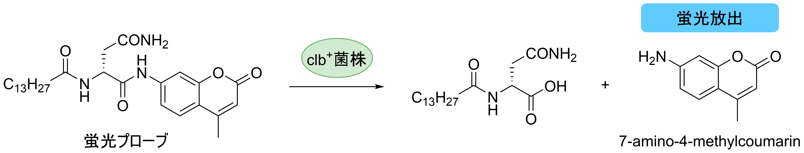

コリバクチンは、一部の大腸菌（clb+ gene clusterを保有する株）が産生する遺伝毒性物質です。この分子は、宿主細胞のDNAを損傷し、ゲノム不安定性や発癌のリスクを引き起こす可能性があります。そのため、コリバクチンの産生能力を評価することは、病原性研究やリスク評価において極めて重要です。当社は、この課題に対応するため、蛍光プローブを用いた簡便かつ高感度な検出技術を開発しました。
当社が開発した蛍光プローブ技術は、コリバクチンによる特異的な分子反応を利用して蛍光信号を発生させる仕組みです。蛍光プローブは、コリバクチン産生経路における特異的な酵素基質の構造を模倣しており、ClbP酵素による特異的な触媒反応を受けることで蛍光を発する物質を放出します。この特性を利用し、clb遺伝子陽性または陰性の定性評価に活用できます。
本プローブは、コリバクチン生合成経路に基づいて設計されており、高い感度と特異性を実現しています。
各サンプルの測定には約4日間の培養期間が必要ですが、マイクロプレートを用いることで多数のサンプルを同時に処理可能です。このため、他の方法と比較して最も高い効率を誇ります。
本技術は、大量のサンプルを対象とした迅速な定性分析に適しており、研究および応用の幅広いニーズに応えます。
お客様から送付いただいたサンプルを受領後、適切な前処理を実施します。サンプルの種類（生物検体、環境サンプルなど）に応じた処理が可能です。
蛍光プローブをサンプルに添加し、特定条件下でインキュベートします。蛍光測定装置を用いて信号を検出します。
得られた蛍光信号を解析し、コリバクチン産生能力を評価します。結果は標準化されたフォーマットでレポート化されます。
測定データと解析結果をお客様に提供します。必要に応じて、追加の解釈やサポートも行います。
この技術は、病原性微生物の研究や環境モニタリング、さらには医療応用にも活用可能です。詳細な情報やお見積もりについては、ぜひお気軽にお問い合わせください。